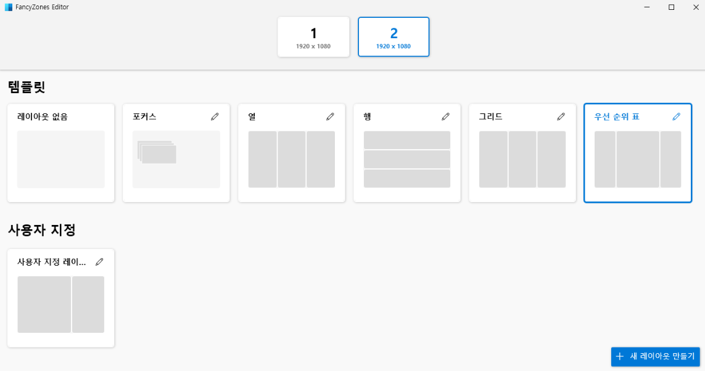
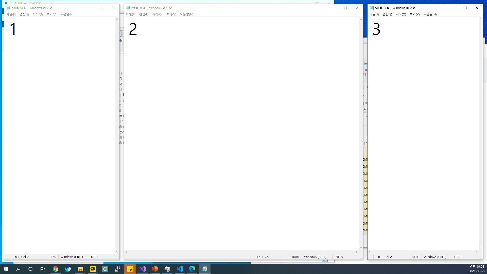

PowerToys의 두번째 기능은 FancyZones이다. 이 기능은 특히 모니터를 여러대 사용하는사람들에게 더욱 도움이 많이 될 것이다. 사전에 영역을 세팅하고 Shift키를 누른 채 드래그하면 해당 영역을 채우도록 위치가 변경된다. 삼분할, 혹은 위 아래 분할을 기존 Win + 방향키 세팅보다 다양하게 원하는 모양으로 사용자 설정이 가능한 셈이다.

설정 후 창을 Shift를 누른 채 드래그하면 영역에 맞게 사이즈가 변경된다.
